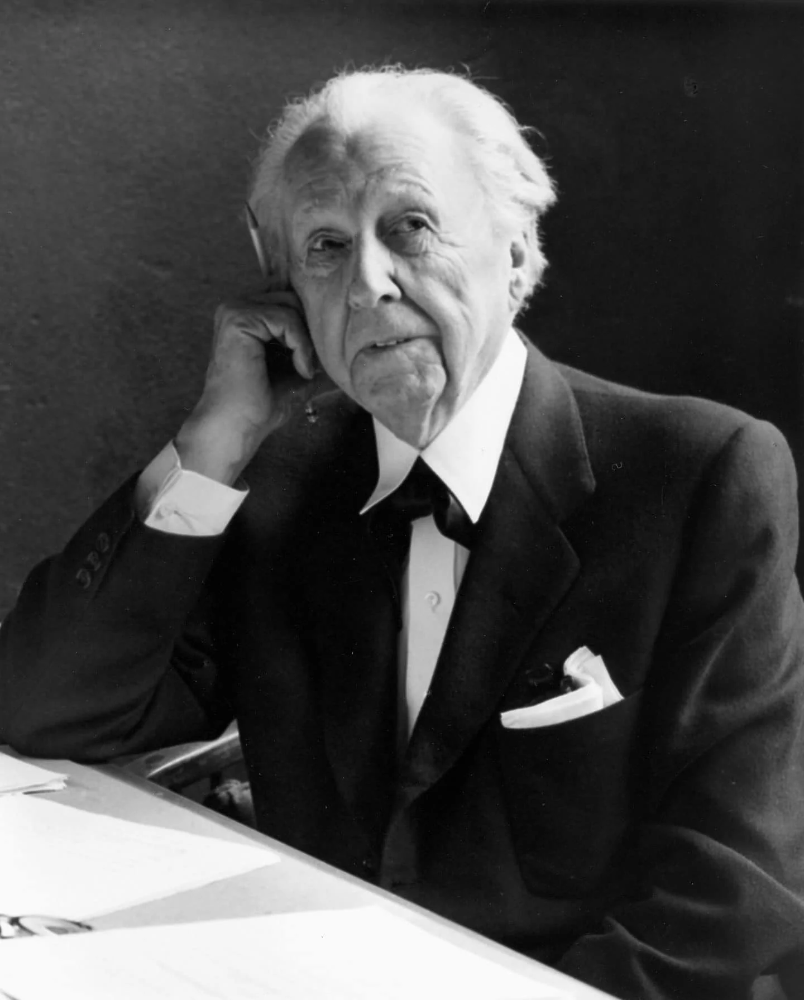
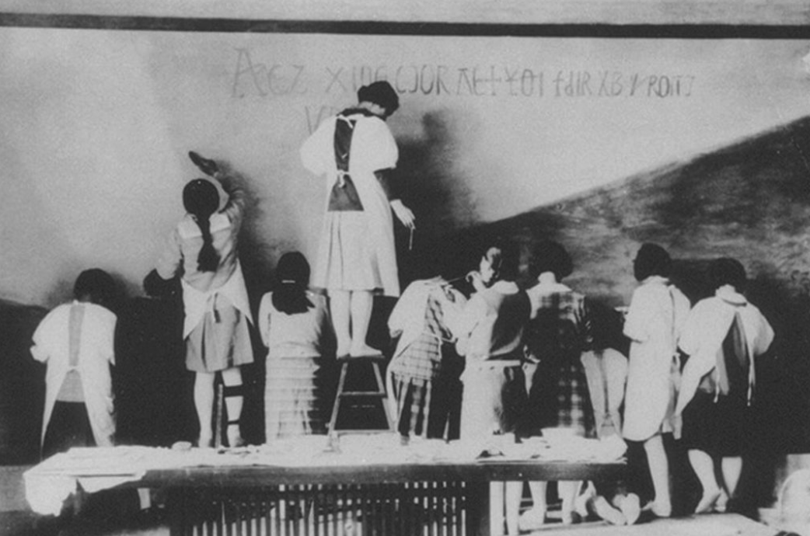
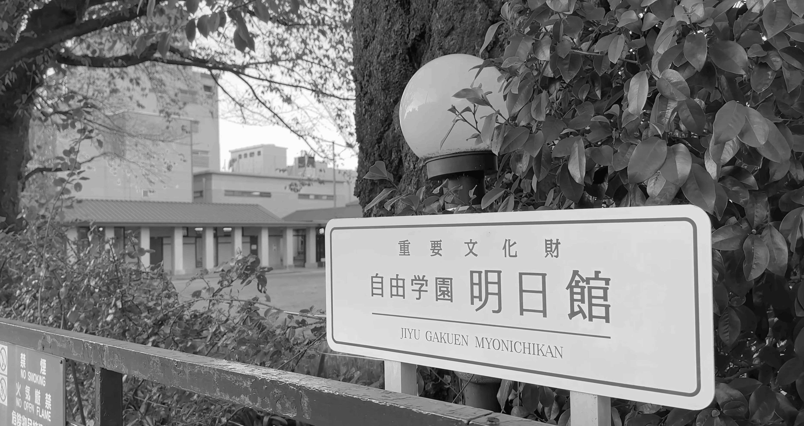

Jiyu Gakuen Myonichikan
자유학원 명일관

Frank Lloyd Wright프랭크 로이드 라이트
フランク・ロイド・ライト · 1867–1959
American Architect · Organic Architecture
Taliesin Fellowship
이를 위해서는 중앙의 넓은 철도를 기준으로 서쪽으로 넘어가야 하는데요, 남쪽 출구로 나가 메트로폴리탄 호텔 뒤편으로 넘어가면, 이러한 표지판이 보이기 시작합니다. 자연스레 표지판을 따라가면 어느 순간 20세기로 빨려 들어가는 듯한, 아주 오래된 보도블록이 깔린 거리가 보이기 시작하는데요. 이곳이 바로 오늘의 첫 번째 목적지로 르 코르뷔지에와 함께 20세기 당대 최고의 건축가로 불렸던 프랭크 로이드 라이트의 자유학원 명일관입니다.


당시 프랭크 로이드 라이트의 조수였던 건축가 엔도 아라타의 추천으로 맡게 된 프로젝트로도 알려져 있습니다. 이 길을 사이에 두고 강당과 본관으로 이루어져 있고, 사실 그의 주요 작품으로 자주 거론되는 장소는 아니지만, 그럼에도 이곳이 특별한 이유는 한국의 이화학당처럼, 일본에서의 여성을 위한 최초의 교육기관이기 때문이죠.
당시 취약계층이던 여성의 교육이라는 새로운 이념의 실현을 돕기 위해 당대 최고의 건축가가 선보인 건축물인데요. 또 동시대의 그의 다른 작품들과 마찬가지로 기하학적인 패턴 장식과 주변의 경관과 조화를 이루도록 수평으로 낮게 깔린 입면을 보여주고 있습니다. 이는 이 학교의 민주적인 설립 이념과도 일치하죠. 오래된 나무들이 늘어선 교정의 느낌에서 옛날 학교의 감성이 아주 낭랑히 느껴지네요.


창립 당시 학생 수가 26명뿐이었기에, 학교 자체의 구조도 간단하고, 크기도 상당히 작은 편인데요, 그 작은 공간을 기하학적 패턴이 심심하지 않게 꽉 채우고 있어서 구경하는 재미가 있습니다. 특히 그가 직접 디자인한 조명이나 의자들까지 같이 구경할 수 있어서 특별했습니다.
이 공간의 포인트는 아무래도 운동장 쪽으로 난 큰 수직창살로, 건물의 창문들은 마치 스테인드글라스처럼 보이긴 하지만, 비용적인 측면을 고려해서 일부는 통유리에 창살로 패턴을 입힌 것이라고 합니다. 조명의 각도 또한 기가 막히게 계산해서 이 공간을 강조하고 있죠. 이곳을 포함해 중앙에 위치한 카페에서는 간단하게 차와 과자들을 마실 수 있는데요. 입장 시 300엔만 추가하면 되니 한번쯤 경험해보는 것도 나쁘지 않다고 생각합니다.


곳곳에 화려하게 조각되고, 조립된 디테일들이 마치 그 당시 장인의 공예품을 보는 느낌이 들었습니다. 물론 세상은 르 코르뷔지에의 손을 들어준 것 같지만...똑같은 철근 콘크리트를 사용했다 하더라도 르 코르뷔지에의 차가운, 기계적인 건축 감성보다 가끔은 이런 감성에 대한 향수가 있는 것도 사실입니다. *저만 그런가요?
맞은편의 강당은 늘어나는 학생을 수용하기 위해서 앞서 말한 그의 제자 엔도 아라타에 의해 설계된 것인데요, 철저히 그의 스승의 스타일에 맞춰 설계되었다는 느낌을 받았는데, 그럼에도 입구부터 정원의 느낌이 본관과는 상당히 달라 보이지 않나요? 개인적인 견해지만 자연물이 철저히 분리되어 일본식 정원 같은 느낌도 나는 것이..프랭크 로이드 라이트의 자연을 끌어들이는 유기적인 건축 스타일과는 맞지 않는다고 느껴져서 개인적으로 아쉬웠습니다. 나중에 가보실 분들은 이러한 본관과의 미묘한 차이점에 주의하면서 구경해보시면 더욱 좋을 것 같습니다.